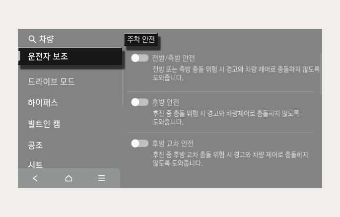

주차 충돌방지 보조 설정
주차 안전

2C_RCCASettings
시동 'ON' 상태에서 인포테인먼트 시스템의 설정 > 차량 > 운전자 보조 > 주차 안전을 차례로 선택하십시오. 각 기능의 사용 여부를 설정할 수 있습니다.
-
전방/측방 안전: 전방/측방 보행자나 물체와 충돌 위험이 높은 경우 경고하거나 제동을 도와줍니다.
-
후방 안전: 후방 보행자나 물체와 충돌 위험이 높은 경우 경고하거나 제동을 도와줍니다.
후방 안전선택 시에만 전방/측방 안전이 선택 가능합니다.
시동 'ON' 시 후방 안전 선택이 기본으로 설정되며, 전방/측방 안전은 이전 선택 값으로 설정됩니다.